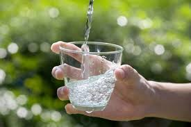
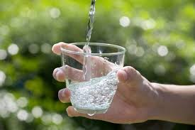

Solve Water Pollution
Solving water pollution requires a combination of actions at individual, community, and governmental
levels. Here are some key approaches:
-
Prevent Pollution at the Source:
- Properly dispose of waste, including chemicals, plastics, and hazardous materials.
- Reduce agricultural runoff by using eco-friendly farming practices, such as planting buffer zones and using fewer chemical fertilizers and pesticides.
-
Treat Wastewater:
- Implement advanced wastewater treatment systems to filter pollutants before releasing water into natural bodies.
-
Reduce Plastic Use:
- Minimize single-use plastics and improve recycling systems to prevent plastic from entering waterways.
-
Restore Ecosystems:
- Protect wetlands, forests, and other natural ecosystems that filter and clean water naturally.
-
Enforce Regulations:
- Strengthen laws and regulations to control industrial discharges, manage sewage, and prevent illegal dumping.
-
Raise Awareness:
- Educate communities about the impact of water pollution and promote eco-friendly habits like conserving water and avoiding littering.
-
Invest in Innovation:
- Support research and development of technologies to monitor, clean, and prevent water pollution.
.jpg) 
